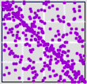
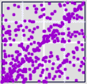

| percent change | mean-centered | |
| Tyson |  |  |
| Sonus |  |  |
| Recalling the different appearances of some of the daily percentage change graphs, the mean-centered graphs are surprisingly similar. For example, compare these Tyson (β = 0.47) and Sonus (β = 4.95) driven IFS with the daily percent change graphs. | |||||||||
| |||||||||
| This may not be such a surprise, if we recall the effect of rescaling by β. |
Return to Effects of Lag Time.